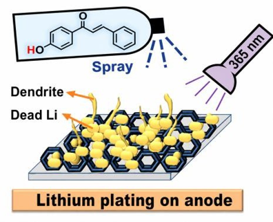

01 / POST-MORTEM
Electrode Analysis
In the method reported by Xu et al. (2025), a solution containing 4-HC is applied to the electrode surface. A 365 nm UV lamp is then used to excite the fluorescent marker and observe its optical response.